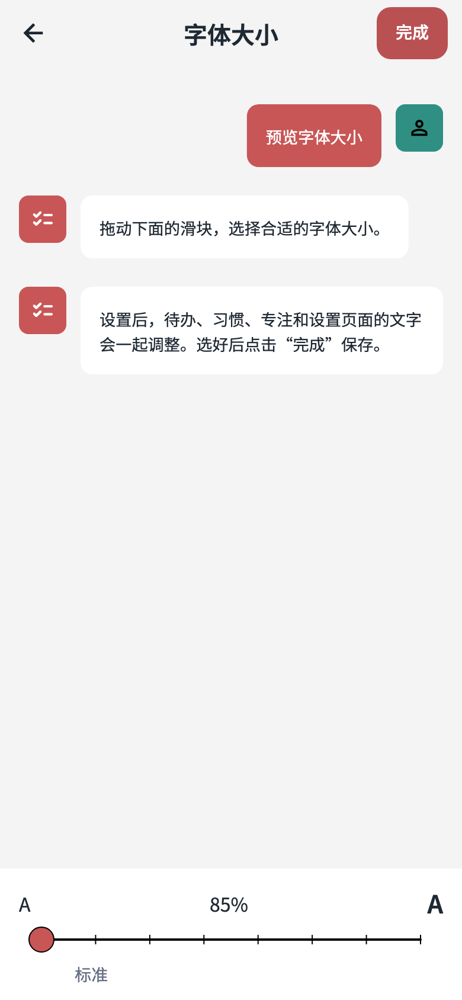
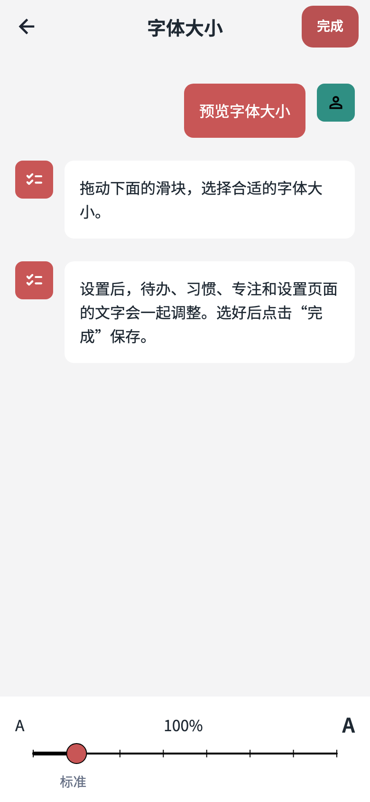
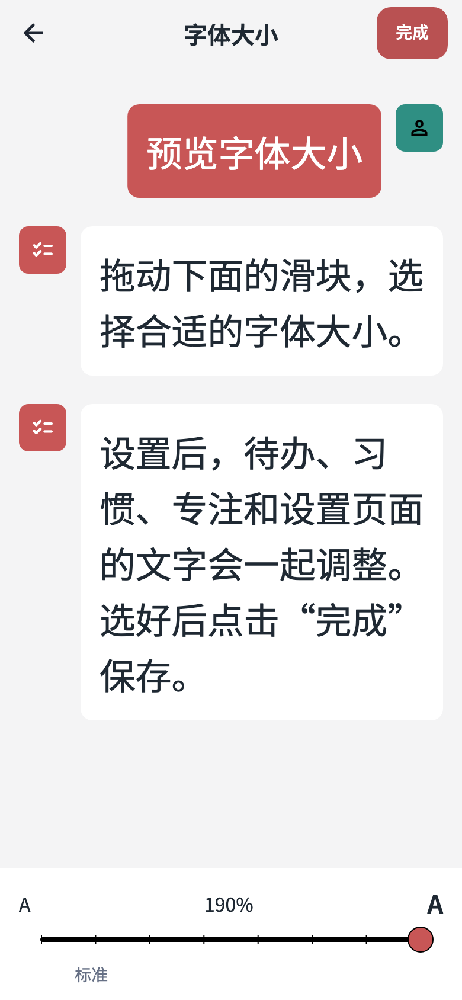
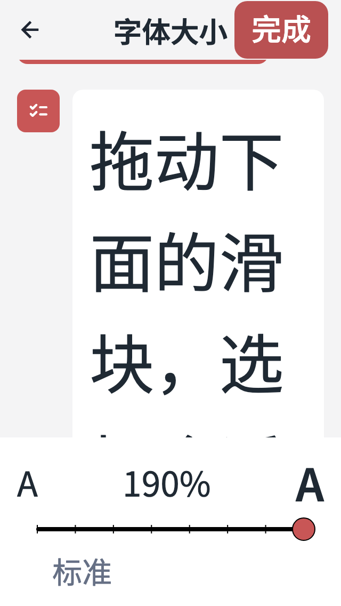

应用字体大小：八档预览页
1.1.47+140013 · 以下为 Flutter 页面组件测试输出，使用随应用提供的 Noto Sans SC 字体。拖动更新预览，完成后保存；安卓实机效果待安装验证。








1.1.47+140013 · 以下为 Flutter 页面组件测试输出，使用随应用提供的 Noto Sans SC 字体。拖动更新预览，完成后保存；安卓实机效果待安装验证。



